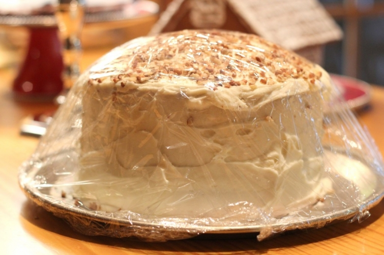
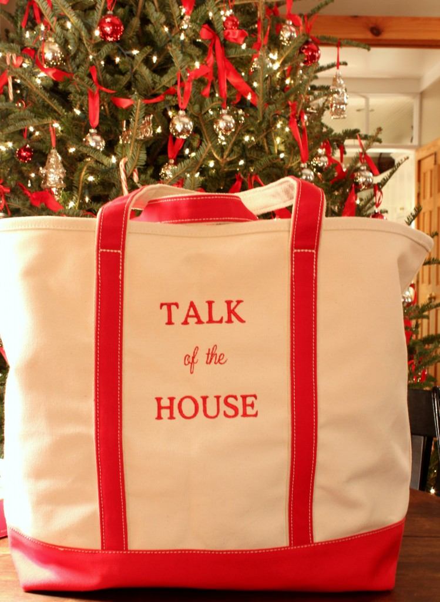

.png)
.PNG)
.PNG)
.PNG)
.PNG)
.PNG)
.JPG)
.JPG)
.PNG)
.PNG)


I hope that everyone is able to just sit back and enjoy this weekend before Christmas. We are relaxing by the fire watching It’s a Wonderful Life as I write this. I think I am finally finished with everything except for wrapping one little gift my daughter has run out to pick up for me. This evening I wanted to share a few gifts with you – some I have received and some I am giving. Let’s start with a couple of beautiful surprises I received this week.
Do you remember the giveaway that we had going here earlier this month? Well, the winner lives here in my hometown, and I went to deliver the prizes to her Tuesday. You won’t believe what she did! I had contacted her to make sure she was at work the day I planned to take it to her. When I got there she had baked a red velvet cake for me!

I’m talking 3 layers of homemade goodness with a delicious cream cheese frosting and chopped pecans. Wasn’t that just the sweetest thing?! My family and I have really enjoyed it since red velvet is one of our favorites. (Thank you so much Pat!!)
This week had the last few days before our Christmas break. As a teacher, I am blessed to receive Christmas gifts from many of my students. I just have to show you one very special present that one of my students gave me.
I can’t tell you how excited and surprised I was to receive this gift! Besides being the very first thing I have with the name of the blog on it, it is also huge – so huge, I think I can keep putting things in it, and then I can’t lift it! (So thank you sweet Ben and your super thoughtful mom!)
Since we are talking about teacher gifts, I wanted to show you what I gave my teacher friends where I work – very easy gift. I simply put together a large container of apple cider with a box of mulling spices. (Our table looks forever long in this photo because it still has all the leaves in it from the faculty party here earlier in the week.)
Then I made a tag and glued a cinnamon stick on it.
It’s a pretty easy gift and one that can be used for entertaining at this time of year. 
I also wanted to share with you how my gifts are wrapped. If you are still in the middle of wrapping yours, perhaps you can use some of the ideas.
First, you have already seen how I added a little ribbon detail to the gift tags on the presents under the tree in the master bedroom.
In the last post about the playroom, I said I wanted to get some more rick rack added to the few gifts in there to dress them up a bit. So I did add a little more to them, and since the playroom is used mostly by the “younger crowd” around here, this gift wrap fits the room better.

Finally, our big tree in the great room is thoroughly surrounded by gifts. Because that room has a “peppermint candy” theme, all of the presents under that tree have a candy cane tied onto them.
That wraps up (ha ha!) the post on gifts. I hope you are finished with all you want to get done before Christmas Day. We are looking forward to our oldest son coming home in the morning. I have one more Christmas Traditions post for you hopefully coming on Christmas Eve, so I hope you will have time to check back here. Until then, enjoy your holiday weekend!
with Christmas cheer,
p.s. Just in case you need some holiday entertainment this weekend…. 🙂

It’s a Wonderful Life [Blu-ray]


.PNG)
Love the tote bag! I’m sure you’ll enjoy it… 🙂
The rick-rack is TOO cute!!
———————————————————————–
Paula, I have been filling that bag up over and over again since I have received it. (I had to drag it across the floor last night since it was soooo heavy.) I am thinking of adding some rickrack to the curtains in the playroom…might be a 2013 project…we’ll see.
Kelly
Merry Christmas Kelly! You put way more effort into wrapping than I do and it is beautiful! It really is my least favorite thing about Christmas 🙁
Have a wonderful holiday! BTW. I love that bag!
I too would like to know what type of pens you use.
Hello Kelly, Love your post today…. Do you just combine the mulling spices with the cider and heat up? I would love to have some for Christmas if I could still find it. Merry Christmas!
Kelly, how thoughtful of your students with the bag! It’s red, of course! You must be a pretty wonderful teacher. It’s been fun getting to know you through your wonderful blog. Wishing you and your family Merry Christmas!
That bag with your blog name on it is amazing! Same font and everything! That’s one of the best, most personalized presents I have ever seen!
Kelly, I am glad that you shared all of the goodness thas been happening lately! Thank you for that! I am also a teacher of 10 year olds and I am always blessed by their generosity this time of year! I am often surprised by the gifts they bring me because they know me better than I know myself sometimes!
Do you suppose your blog friend, Pam would share her recipe for the red velvet cake and icing with us? It looks wonderful and scrumptious!
I pretty much have all of my gift wrapping all taken care of but I might add a few final touches now that you have inspired me. Thanks for all of the neat pictures of what you have created with your gift wrapping!
Gosh, that red velvet cake looks sooo good. Yesterday at our family christmas party at the lake my daughter brought red velvet cupcakes and I didn’t get even one!
I love your “Talk of the House” bag…I have one with my initials on it that my daughter gave me several years ago, you will love using it.
Wishing you and your family a very Merry Christmas!
Kelly, the last two days my family and I have spent driving from Chesapeake, VA to Mississippi……….we listened to many bible teaching series, the radio, and the tv going on in the back for the kids…. My husband and I switch driving and what is playing often so we don’t get “bored”. Several times I curled up in the passenger seat with my phone, a cup of coffee and your blog. Thank you for entertaining me……I adore your blog. And I love how you pay so much attention to details on your presents. I am a hurry up and get it done kind of girl, but I realized it is just as important as the love wrapped inside!
Kelly,
I love your wrapped gifts. I know you will love that tote for a long time. Don’t you just adore thoughtful gifts from your students? I know I do. Merry Christmas to you and yours. xo
Merry Christmas Kelly!
Your handwriting is beautiful! What kind of pen do you use? I guess you know calligraphy, too? Have a wonderful Christmas!!
Hi Kelly
As usual your posting is inspirational! I am always in awe of your seemingly endless energy and creativity. In my next life I would love to be one of your children :)… or at least one of the teachers on your staff!
I only have 3 more presents to wrap and I’m done… yay!
All the best
Cath
I just love that bag! Your different themes for gift wrapping is beautiful. Hope you have a Merry Christmas.